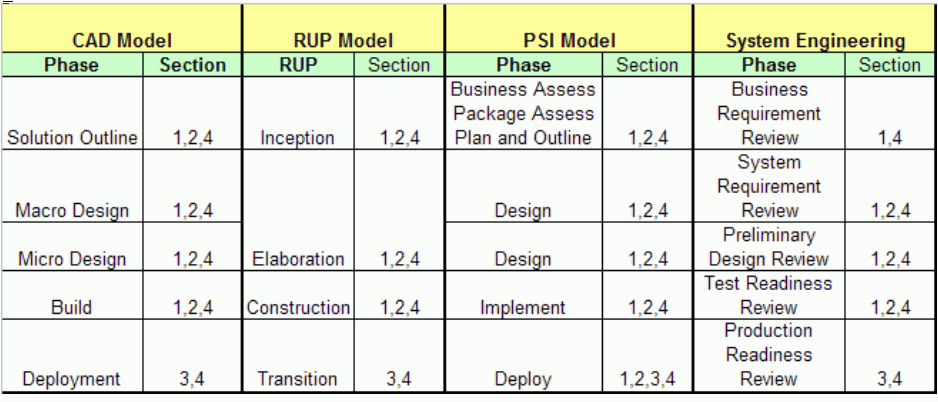

| Guideline: Assessing Viability |
 |
|
| Related Elements |
|---|
Viability is typically re-assessed multiple times, as more information becomes available and as the system design is developed into more detail. The purpose of the guideline is to provide additional help on the steps of assessing the viability of a solution design. The questions are intended to supplement those found in the Viability Assessment checklist. It provides a set of review questions that can help ascertain the completeness of the solution design and point out common risk areas. It is used as part of the overall process of performing a viability assessment. The guideline is organized in terms of five assessment steps conducted at various points in time during a project lifecycle:
Assessment of Qualities and ConstraintsThe goal of this step is to understand if the architecture is based upon a solid foundation of requirements. The reviewer is looking for a current, well-articulated and approved set of non-functional requirements (i.e. qualities and constraints) to guide architecture development. A good set of architectural requirements will share the following characteristics:
Architecture development depends upon well-formed requirements. A vague statement such as "The system will meet
the businesses performance objectives" needs to be decomposed into verifiable statements concerning specific
transactions, users groups and targeted response times. The guiding principle is that things must be
defined to whatever level of detail is necessary to control the critical aspects of the system. Compatibility, Conversion, MigrationIf this system replaces an existing system has the architecture accounted for any compatibility, conversion, or migration issues? Some areas of concern include:
Target DatesAre any specific target dates specified or implied? The goal is to understand the architecture's ability to support major project milestones. Areas of concern include:
Try to assess the business impact of missing these targets. If any advantage could be gained by improving on the dates, try to assess it. Sequence for ImplementationIs a sequence for implementation suggested or implied? Possible alternatives include:
Sequences of implementation concerns the architect should validate are:
Times When Implementation Is DifficultWhen will it be difficult to implement a new system? Workload peaks and other factors in the existing systems might prevent implementation at certain times. Will the probability of success be diminished because implementation is scheduled to coincide with:
Application Development Environment (ADE) ConsiderationsIdentify issues regarding the project's ability to support the application development requirements.
|
||||||||||||||||||||||||||||||||||||||||||||||||||||||||||||||||||||||||||||||||||||||||||||||||||||||||||||||||||||||||||||||||||||||||||||||||||||||||||||||||||||||||||||||||||||||||||||||||||||||||||||||||||||||
|
Review Area |
Risk Factors |
|
Size and scale |
Large numbers (many thousands) of transaction, data volumes or components will be difficult for the targeted technology to support. |
|
New or untried products, services or technologies |
Completely new and unproven hardware, software, or techniques, or not used before in this environment. |
|
Unusual application requirements |
For example, multimedia or distributed data applications on which the system design and application design both have a high impact. Application designs will be challenging and require expert engineering. |
|
Complexity |
Multiple sub-architectures, or many suppliers' components, or an unusually complex system structure. These will make it more difficult to design and implement. |
|
External interfaces |
Interfaces to other systems, including those outside the enterprise that may not exist or may need changes. Also, connections across national boundaries where infrastructure or regulation will impede implementation. |
|
Availability and security |
Exceptionally challenging availability or security requirements, such as "the system must never fail." |
|
Unreasonable Expectations |
Client is over optimistic about the benefits to be derived from the technical solution. May be infatuated with technology to the determination of business objectives. |
|
Inexperienced End Users |
The public and users who have little or no previous IT experiences. These could be mobile users. Possible acceptance issues which pose risk to implementation and end user satisfaction. |
|
Implementation time scales |
Short and inflexible target dates. If, for example, 10,000 users need to be trained in three months, then this represents a challenge to most enterprises. |
|
Development Readiness |
New or untried development tools or targeted platforms. Lack of defined development processes. Risk due to instability of development environment, or lack of readiness. |
|
Development Skills |
Skills of development team do not match the requirements of the proposed technical solution. |
|
Development challenges |
Increased complexity or risk of failure due to the size of the application or the newness of the technology. |
|
Budget Limitations |
The system must be delivered at a fixed cost or be subject to cancellation in the event of particular budget conditions. |
|
National Language Support |
NLS factors are challenging |
Completeness of Requirements
Assess the completeness of the requirements. Are there major areas of requirements that have not been defined, but should have been by this point in the project? Identify which requirements are missing, and how and when these missing requirements might be obtained. For instance:
- Initiate a subproject to gather them
- Gather them as part of the application development process
- Have a business transformation team (business reengineering) provide them.
- Develop a prototyping to provide them.
Comment upon the stability (are they likely to change) of the requirements. Activities such as a business
transformation exercise or a prototyping project are inherently ‘volatile' because they explore new ways-and-means of
doing business and tasks. This means that they may change a requirement (say a set of business processes or the
order that they are executed) while the architecture and design effort is proceeding.
All of this apparent uncertainty of requirements is increasingly common in modern system developments. To summarize, consider the following about the requirements:
- Complete?
- Will be complete? (From where will the information come?)
- Stable? (What is likely to change?)
- Are your assumptions reasonable?
- Are they verifiable?
Assessment of Conceptual-level Architecture Models
Architecture Context
Verify that the architecture support the client's and project's goals and directions:
- Does the client have a strategic IT Architecture that needs to be followed?
- Does the Architecture support the client's principles and standards?
- Does the Architecture support project goals and contractual requirements (e.g., are performance guarantees stipulated)
- What assumptions were made about the activities, work products and funding of the Architecture group in the contract? Are these reasonable considering the technical problems to be solved?
- How does the project scope define the boundaries of the Architecture?
Architecture Overview
Review the conceptual architecture as documented in the Architecture Overview artifact. Address the following items or questions:
- Are some conceptual nodes going to be more challenging than others are? Which ones and why?
- Order of development and implementation of conceptual nodes?
- Have all connection types been identified?
- At a high level, do we understand the dynamic behavior of the system and inter-node communications?
- Are the major software components identified?
- Have system interfaces, both internal and external been identified?
- Are the user groups and remote locations identified?
- Have the architects prematurely made technology or product decision before understanding the requirements fully?
- Are the major architectural decisions that have to be made been identified?
- Have reusable assets such as Reference Architectures been considered?
- Is there a plan for the project's architectural activities? Does the plan support:
-
- The scope of the stated conceptual architecture?
- The architecture decisions that have to be made
- Work products that have to be produced?
- Any contractual obligations (deliverables, service level attainment)?
Migration and Integration Issues
Are there any major migration and integration issues with this architecture or design as it now stands?
- From an existing system that it might be replacing?
- From an existing system that it might be enhancing? Take special care when trying to interface network or pervasive computing system components to systems that were never designed to embrace them.
- Does it fit in with existing systems? If no, can these be changed to fit in with it?
- Considerations for data conversion or creation.
- If the system must handle requirements for a Version 1 and a Version 2 of the system, will the system be capable of being migrated from Version 1 to Version 2?
-
Access to archive data, especially if protected cryptographically.
Few systems are ever installed into a "green field" so its important to identify other systems or environments affected by the deployment of this system. Ask the question "Is migration to this new system possible and reasonable?"
System Testing Strategy
Identify how this system will be tested. Complex systems must be tested in parts, and then the parts integrated
and the complete system tested.
Show whether the testing of this system will need special attention in later phases. For example, if multiple
workstation conceptual nodes are to be installed, you will need to test functions of the workstation, its connections,
performance and system management (including software and data distribution). When identifying such tests, bear
in mind operational and scheduling constraints and stress testing conceptual nodes.
Special Design Skill Requirements
Consider especially what special skills are needed to continue the design process. These might be:
- Knowledge of unfamiliar or special hardware or software
- Knowledge of an application package
- Special industry knowledge
- An exceptionally large design tea
- A multinational, dispersed, design team
- Network computing skills
- Exceptional security requirements
- Object technology
- System Management expertise
- e-business
Training for Users and Operators
What type of training or retraining is required for users and operators of this system? At this stage you probably don't know exactly what the users and operators of the system are going to do. But you may have some strong indications from the requirements what the skill levels of the operators are, for example:
- Bank clerks
- Supermarket checkout operators
- Shop floor workers
- Secretaries
- Graduate engineers.
- Mobile users
- The IT organization
It is useless to expect operators to work the system if they cannot be trained within a reasonable time and at a
reasonable cost. If they cannot, the system design is not reasonable and needs to be altered.
Cost Violations?
Are there likely to be any obvious cost violations from this design? For example:
- User workstation costs far exceed suggested costs per unit in requirements.
- Estimated costs of one host computer exceed cost maximum shown in requirements.
Note: It will not be possible to determine system cost since all the components will not be decided yet.
But major exceptions from the assumptions made in the contract should be identified as soon as possible and stated as
issues or project change requests.
Benefits Still Achievable?
Consider whether any of the benefits you identified previously might now be unachievable as a result of any design decisions you have made. If so, document these, and ensure that a strategy is in place to address the issues. Escalate to project management if needed.
Design Competitiveness
Check that the solution design is competitive. The design may not be the only choice open to the client. There may be other choices offered by groups within the client's organization, or by external bodies. These may not even be based on a computing solution; they may be business-based such as selling part of the enterprise instead of upgrading its computing systems.
New and Unusual Characteristics
Assess what might be unusual about this system and its design. Is there anything that would require special attention such as extra project management or risk analysis effort? Considerations include:
- Many new and untried component types
- Many thousands of components
- Many thousands of end-user operators
- International scope, especially NLS and communications considerations
- This system design will cause other connected systems to require a significant change/upgrade
- This system must never fail
- The public at large are its users
- The end users are highly mobile
- Do you know of any other systems similar to this?
- Are there any special safety considerations for the system users or the system components as you can now see them?
Feasibility
- Is it possible to design, implement, and run this system? Some systems are just too huge or complex to ever work properly. Is this one of those?
- Is undue risk being introduced through the use of unproven technology?
- Do you need to recommend that a prototype of this application be built to ensure that:
-
- The system flows are possible?
- The system can be programmed?
- The design matches end-user skills and expectations
- Products work as advertised?
- The system operators can operate the system?
- Is the overall complexity of this system so great that those who come into contact with it can never comprehend it? Once again absolute answers are difficult to formulate, but if you suspect the answer to this question is "Yes," develop a plan of action. Possible mitigation approaches may include:
-
- Implementing incrementally
- Finding a package
- Removing functionality from scope
- Negotiating reductions in service levels, performance objectives or availability
- Simplifying the design
- Removing the "leading edge" aspects in favor of more proven solutions
Assessment of Logical Architecture Models
Support Functions
Specify the new support functions identified by the system design.
At this point of the process a number of "application-like" functions have been identified which in reality serve no business function, but rather support the operability of the system. For example:
- Database (DB) design changes and accesses to support mass processing
- Logical DB recovery
- Detection of failure, either at the system or application component level. This latter is especially important in widely distributed applications such as LAN-connected workstation systems.
-
Support of mobile users
Common services to multiple applications also should be identified: - Operating functions such as start up and shut down
- Single logon to all applications
- Backup, archiving and restore of data
- Data staging services to import / export data:
-
- Event control and work flow of business processes
- Mandatory flow control
- Asynchronous events handling
- Application level exception processing:
-
- Monitor functions
- Logical error handling
- Persistence
- Hooks to monitor availability and performance
At this point you should verify that sufficient information has been collected at the functional logical level in order to:
1. Proceed with the detailed design regarding the use of these facilities
2. Ensure that these features are incorporated in the component model
3. Pass the specifications to Application Developers for inclusion into the development process
In arriving at the present architecture models and application models several assumptions may have been made regarding the feasibility of certain software facilities and interactions. Some of these facilities and interactions will be provided by system control software but others may have to be provided by application programming. For example:
- Application cannot forward messages so it has to perform stand-in processing
- Application can tolerate parts of a DB being "corrupt"
-
Check with the Application Development process team (program designers) that these functions can be provided.
Prototype
If the system, or part of it, looks particularly challenging, especially regarding end user operation and acceptance, it may be necessary to build a "proof of concept" prototype. Proof of concept prototypes is also a good practice to test and validate any unknowns about the design and/or development environment. For example, a proof of concept prototype could be used to confirm / test that a message queuing between a workstation and the central host will work, give the required performance, and maintain integrity when the cable is pulled.
Remember that if your application development (AD) environment is new, you may wish to prototype it. For example, you may wish to set it up and try developing a small application, as proof-of-concept that the components of the AD environment will actually fit together and perform at the required level. Be aware that prototypes need to be carefully controlled and thought out. If not, they can soon consume enormous amounts of resource. It is important to remember that a prototype is testing particular aspects of the system solution, and that it may be missing other features necessary for the system to meet client expectations. Thus, avoid the danger of letting a prototype become the real system to satisfy schedule constraints and end user demands. Realize also that the prototype should be evaluated and how much effort it will take to do the prototyping.
Development Resources
Define the development resources required for the infrastructure of each node, for connections between functions, and
for testing.
Note that the development environment may already have been defined. If so, determine if any of the newly defined
system function creates additional requirements. Add more detail on:
- Specific hardware functions to be supported
- Data management/creation
- Connections required for testing
- Specific compilers/tools required
- Number of developers required.
Implementation Dependencies
On what will successful implementation of the system depend? Reconsider what has changed appeared or disappeared.
Significant Changes?
Assess the impact of these changes on the schedule for implementation of the system, rejecting any alternatives that cannot be implemented within the schedule. For example,
- The first use of network or pervasive computing
- The first use of PWS
- The first use of mobile technologies or the Internet
- Distributed systems
- Changes of scale, such as increasing the numbers of users from hundreds to thousands
- Providing a service to users outside the organization for the first time
-
Providing service to users/businesses in other countries.
Remember that real people have to use this system. If your design is a radical change for the people or for the organization, they simply might not be able to absorb the rate of change, and the system would not be used as intended, or deliver the expected benefits.
Major Cost Headings
Summarize the major cost headings. As the cost model coalesces, is it still in line with proposal assumptions? Start to fill in the major items under headings including:
- Initial implementation
-
- Hardware
- Software such as package
- Physical installation
- Development and system test
- Development of system management functions
- Acceptance test/pilot running
- Mass implementation
- Ongoing operation
-
- Operating and support staff
- System maintenance - application maintenance staff and facilities
- Hardware and software maintenance
- Communications
- Software licenses
- Environmental costs
- Expansion and growth
-
- Hardware
- Software rework/amendment
Although the data may not be fully available its useful to build a framework that can be completed in the later
phases. Raise issues where cost assumptions may be exceeded (see item below).
Within the Budget?
Is the system still within the budget? Has the workload increased or are the component and operational models defined significantly complex to the point where the planned budget will not be large enough for typical product solutions? For example, if the budget is based on an average cost of 5,000 dollars per user, can the function be provided in user workstations (and/or host systems) that cost no more than 5,000 dollars per user? Bear in mind that there may be trade-off between capital equipment costs and development or operating costs that also need to be taken into account.
Benefits Still Achievable?
Are the benefits still achievable? Do not spend long on this question, but consider whether any of the benefits previously reviewed might now be unachievable as a result of any design decisions made. If so, document these, and ensure that the sponsor understands it.
Acceptability of System
Is the shape of the system acceptable to the client? Has it changed to the point where it no longer matches what the client wishes to buy? Will they think it is too large and complex for the applications or services they want to run? Will the system sponsor be able to "sell" the system to the intended users? Can the service levels for the end users be met? Given the revised data and function placement strategy and infrastructure support functions, can the service levels that the users require of the business processes be met?
Reasonable Design?
Check this system design for reasonableness. Examples of why this system might not be reasonable could include:
- Too complex
- Too advanced
- Too costly
- Unmanageable
- Unprogrammable
- Unsupportable
- Needs technology that is not available or could not be developed
- Too challenging a time scale for implementation.
Character of the System
Review the character of the system. Check that the targeted infrastructures still comply with the architecture:
- Has their character changed significantly?
- Can the processing centers handle new workload?
- Are new infrastructure components sufficiently sized?
- Are the LANs and WANs defined in the system architecture well matched to the traffic they have to carry?
If necessary identify the reasons why the system design and the architecture do not match. Have the requirements
really changed as the design was developed, or did the design not pay enough attention to the architecture? Plan
whether the architecture is to be changed or the system design is to be reworked.
Will any of these issues affect the availability of the new system? For example, if the new system is to run on
an existing processor, operating system image, or network configuration, are the availability characteristics of the
existing platform consistent with the requirements of the new system? Include environmental maintenance and
physical constraints such as ATM or printer hopper capacities in this evaluation.
Assessment of Physical Architecture Models
Verify Disaster Recovery Design
Verify the components of the disaster recovery and associated nodes and connections. Consider the components of the disaster recovery node(s) and also any support components in the node(s) being protected by the disaster recovery node(s). The disaster recovery site has to be kept in step with the normal business system, if it is to be able to take over the processing in the event of a disaster. The requirements should have told you how up-to-date the disaster recovery site must be. Perhaps it is sufficient to take backup tapes over to the disaster recovery site at regular intervals. However, some designs may require more recent data. Perhaps there is a need for functions to "collect" any changes to key data records or files, and then transmit these changes via some "sender" function, to a "catcher" function in the disaster recovery site. Check the design for:
- The existence of collector, sender, and catcher software components
- Adequate processing and storage capacity at the disaster recovery node (note that the disaster recovery node may have its own regular workload)
- The existence of satisfactory connections
- The means for the switch-over of the network (if required)
New Support Functions?
Review the list of new support functions, and check whether there have been any changes, additions or deletions.
Identify which functions cannot be provided by the components selected (i.e. no reasonable match is available on the
market). Then decide whether:
- You have to return to the use case model, analysis models or design models to reassess the need for the specific facility. It is likely that by slightly changing the design or easing up on the requirements the need for this facility disappears.
- You have halt the system design process and request a review with the executive sponsor.
Additional Development Facilities?
Define any additional development facilities:
- What new tools will be used to develop and test the new system?
- What new skills will be needed?
- How will these be acquired - retraining existing staff or hiring new?
- How long will it take to create the development environment?
- How much of the development environment will need to be retained for ongoing system maintenance?
- Have the development functions been assigned to nodes? Included in the sizing data?
- Have the connections between the development and production environments been defined in the system specification?
Skills and Training
Identify the skills and training that will be required for end users, operators, and support staff.
Now that specific components with which the system will be implemented have been determined, update the training assessment that was created previously, and identify any new skills that will be required on the part of end users, operators, and support staff. Based on this, identify the specific training that will be required for each group (end users, operators, support staff) and potential sources of that training (in-house education staff, vendor-provided training, etc). Do not forget any National Language Support considerations. Determine if benchmarking of parts of this infrastructure is necessary. Some clients might call these proving or certification trials. Benchmarks may have been called for by the client's acceptance process. A benchmark may also be needed if mapping the largest node's workload onto the selected components created a borderline capacity projection. On the other hand, even if the client's acceptance process normally calls for a benchmark, the projected loading level for the selected components may be sufficiently low to convince the client that a benchmark is not actually needed.
If a benchmark is needed, that recommendation should be made now, in order to allow time for preparations and to guide
activity in the Infrastructure Components phase.
Identify Possible Product Sources
Identify possible sources for the products selected including client- and vendor-developed products. Do suppliers and products have to support certain criteria and standards? What is more important to success, use of emerging technologies for optimum solutions or proven concepts? Vendor selection should be based on two criteria:
- Technical aspects.
-
Non-technical aspects such as presence and support in the country, market acceptance, and the likelihood they will
be around in the future.
Remember that some clients might prefer the purchasing department to make the final choice of supplier for certain types of component.
4.6 Refine Cost Figures
Refine the costing. Check whether the system design already has exceeded its budget. Check whether the
design is still competitive. For a system with few different types of nodes, a quite accurate estimate can be
made. For a system with many nodes of different sizes, accurate costing will be possible only after the design is
complete.
Add more detailed headings to the cost summary you started earlier. Remember to consider:
• Maintenance
• Development
• Operations
• Communications facilities
• Personnel
• Space, power, and other facilities
• Supplies
• Education.
Additional Product Benefits
Review the selected components for additional potential benefits to the client beyond those they explicitly stated in the requirements. Plan how they are to be treated in evaluating the alternative designs. Can the benefits be added to the system evaluation criteria? Can the benefits be used to assist the sponsor in selling the system to others in the client organization?
Benefits Still Achievable?
Are the benefits still achievable? Do not spend long on this question, but consider whether any of the benefits
you previously reviewed might now be unachievable as a result of any design decisions that have been made. If so,
document and ensure that the sponsor understands it.
Ability to Deliver
Review the system for reasonableness:
- Does the complexity of the system match the type of function it is designed to provide?
- Does it match the skill and experience of its users? Of its operators?
- Does it have too many (or non-complementary) architectures?
- Does it have too many component types?
- How effective is system-wide security? Do all the security components work together to provide protection?
- Will the system meet its availability targets?
-
- How many components have to be operational for the users to receive service?
- How many staff will be involved in recovery from a failure?
- How long will recovery take?
- Are there enough components to ensure recovery?
Do the products and techniques on which the system is based match its expected life? An interim (tactical) system
with a short life can safely be built using old technology because it will soon be discarded. A system with a
long life expectancy (most systems) should be built on up-to-date technology and methods so it can be maintained and
expanded to support future requirements.
Conducting the Risk Assessment
Risk Identification
1. Start by hypothesizes on the possible risks using the results from the assessment steps. Test the
hypothesis. Find potential disconnects among the work products or within the architecture models. For
example, a disconnect would be a use case that is not reflected in the analysis model or an improper design
model. Once the disconnect is identified determine if it is the source of a risk or evidence of another hidden
problem. List the technical risks in the categories:
- High - will stop the project completely (critical)
- Medium - might stop the project completely (potentially critical)
-
Low - a problem but not a critical one (nuisance)
By identifying a risk in any of the above categories you are signaling that you consider there is a reasonable probability that the events that define the RISK might actually happen. You need to decide what ‘reasonable' actually means in your context. Is it 10%, 30%, 50+%? You will need to take a consistent view so that you don't cause confusion.
2. Look deeper into your identified risks as to how they might make the project and therefore the successful
delivery or running of your system, fail.
- It will not work at all
- It will work with limited function, service, or benefits
- It will work but will be delivered late
- It will work but will cost too much to develop (often associated with late delivery as above), or operate
- Some of the above may be acceptable and not represent a risk.
3. Identify the high and critical risks and decide upon containment actions for them. This is an especially
appropriate action for a system design team to do. If the requirements are too difficult to understand do not
proceed with the design but do more work to clarify them. In particular identify those risks that need urgent
action. A risk may be graded as medium, but the need to deal with it may be much more urgent than a particular
high risk that will not stop the project for say a year.
4. Ensure that your issues list is updated with your new risk assessments, containment's, and urgency.
5. Communicate your risks and your plans.
6. Make sure your risks and their associated containment actions are communicated, where appropriate, to the next
phase of the design for that phase to work with them. If you do not have a risk containment plan for each risk
seek assistance.
Interview Guides
The following guides provide key questions to assist in identifying risks.
Requirements
|
Interview Questions |
|
Is there an official requirement statement and who approves it? |
|
What is the relationship between AD and users? |
|
How are defined requirements verified in the design phase? |
|
What is the process to ensure a design element satisfies the requirement? |
Technical Stability
|
Interview Questions |
|
What technology do you have installed today? |
|
When a failed component has to be replaced, does it require the complete network technology to be put out of commission? |
|
Can you identify other projects that have successfully used similar technologies in the way defined by the component and operational models? |
|
Are the interfaces described in the system context diagram using proven technologies? |
|
Is there a requirement for data synchronization? If yes, are there production references of a similar implementation? |
Technical Complexity
|
Interview Questions |
|
What types of application transactions are you running? (For example, functions shipping, remote procedure call, transaction routing, terminal applications) |
|
In your transaction manager environment, is load balancing required? |
|
In your transaction manager environment, what interface attachments are required? (For example, DB2, IMS, MQ Series) |
|
What is the request flow for applications in this environment? (For example, peer-to-peer, distributed, broadcast?) |
|
Is complex routing required? |
|
Are there specific features required for this facility? (For example, guaranteed delivery, persistent data, time-outs, priorities) |
|
If messaging is used, what is the maximum message length for your application? |
|
If messaging is used, what is the maximum number of messages that can be stored on the queue at the same time (maximum queue depth)? |
|
What object management framework is your using? (For example, COBRA, DCOM) |
|
What languages does your ORB (Object Request Broker) need to support? (For example, Java, C++, Smalltalk, etc.) |
|
What is your philosophy for handling a mixed workload? (For example, each application on its own server, multiple applications on a bigger server) |
|
What languages need to be supported in the future? Does the layer of business objects need to provide guaranteed responses? |
|
Does the client have experience in implementing or supporting the technologies prescribed by the architecture? If no, how is that being addressed? |
Technical Integrity
|
Interview Questions |
|
What is your maintenance window for the system, application, database, and network? |
|
Do you need to support multiple concurrent users? |
|
Do you need all components continuously available? |
|
Is there a single point of failure in any component? |
|
How would a power outage affect your availability? |
|
How do planned changes affect availability? |
|
Are there single threaded areas that would impact concurrent users? |
|
Can the components of your systems exploit SMP or cluster technology? |
|
How would a breach in security affect availability? |
|
Are there severity-based response time criteria for your vendor support? |
|
Can this component take advantage of redundancy to improve its availability? |
|
What are the performance objectives for this component? |
|
How can you verify that this component is meeting its performance objectives? |
|
Is there a threshold of performance degradation that would trigger changes to this system? |
|
Is performance to be measured at the source or at the destination? |
|
How is the load to be generated for performance testing? |
|
Do you have any response time objective in your Service Level Agreements? |
|
What is your expected average and peak transaction rate? |
|
What is your average and peak utilization? |
|
What tools do you use for performance monitoring, reporting and tuning? |
|
How do you handle workload balancing across multiple servers? |
|
How do you control the resources (for example, CPU, storage, DASD) used by individual users? |
|
How is response time measured (for example, end-to-end or by individual component)? |
|
Can your transaction be backed out if any failure occurs before its completion? |
|
Do you require two-phase commit? |
|
What kind of serialization and locking mechanism are you using for database and distribution service components? |
|
Does each interface in the process validate its input? |
|
Does this component have built-in integrity checking? |
|
Does each major step perform logging? |
|
Do you require time synchronization? |
|
Are there any time dependencies in this component? |
|
What is the granularity of backup and recovery? |
|
How long is your backup window? |
|
How long is your recovery window? |
|
Can backup take place while the component is in use? |
|
Do you have any requirements for roll forward recovery, in this component? |
|
Do you have any requirements for point-in-time recovery? |
|
Is this component responsible for its own recovery, or does it rely on an underlying component? |
|
How do you authenticate a user? |
|
What controls exist to prevent unauthorized access? |
|
What level of authentication is controlled? |
|
What level of access control granularity do you require? |
|
Is third party authentication required? |
|
Is an audit trail required? |
|
What level of regulated security is required? |
|
What level of access control granularity do you require? |
|
Do any of your systems transmit user IDs and passwords in the clear across the network? |
|
Are there any hard coded passwords in this component? |
|
Is your security server centralized or distributed? |
|
What is the users' expectation of the availability, in hours, of this application? |
|
How would this project affect the capacity of the client workstations? |
|
How quickly do you need to respond to unexpected growth by changing capacity? |
|
How quickly can you reallocate resources to handle unexpected workload? |
|
What is your rule of thumb on when to seek increased capacity? |
|
How should this system react when you reach capacity? |
|
Do you have a help desk? If yes, do they support this component? |
|
Do you have a centralized focal point for control of this component? |
|
How are problems reported and managed for this component? |
|
Is there a problem determination procedure for this component? |
|
What is your change control process? |
|
Are there automated alert processing and notification functions within your components? |
|
How do you distribute SW updates? |
|
Are there any requirements to support multiple languages? |
|
Have you had a security audit recently? If yes, what were the findings and how were they acted on? |
|
Have you completed a process to remove unused or dormant IDs? |
|
Are there reports for identifying repeated unauthorized access attempts? If so, are they followed up |
|
Is there a limit on the number of systems that can share the password database? |
|
What happens when the communication between the remote site is temporarily lost? How quickly would your security solution resynchronize the separate password databases? |
|
Does this component offer translation between two different security mechanisms? |
|
Can this security solution fully recover from a complete loss (corruption) of its primary password database? How long would it take, and has it been tested? |
|
Is there a documented process for creating new user ID's and groups? Who administrates it? |
|
Is there a documented standard for your group structure? |
|
Do you require data replication? If so, how current do you require the replicated data to be? |
|
If there is a disk failure, can the database continue to operate? |
|
If the database runs in a cluster, how will the loss of a node impact the database availability? |
|
Can your database, tables, index be supported across multiple volumes? |
|
What is the maximum table size and database size for your application? |
|
What are the transaction types in your application? (For example, adhoc or pre-planned, simple or complex queries, OLTP update) |
|
Are there specific features required for this database? (For example, store procedure.) |
|
Does your database take advantage of the unique features of your host? (For example, workload manager, etc.) |
Architectural Qualities
|
Interview Questions |
|
What is the maximum number of active users? |
|
What is the maximum number of connected users? |
|
What is the maximum number of defined users? |
|
What growth rate do you anticipate? |
|
How much transactional data is involved? |
|
How much repository data is involved? |
|
What is your philosophy for managing your increase in capacity? (For example, larger systems or more systems) |
|
What does your client consider when identifying a cost-effective solution (such as the cost of software, hardware, availability, maintenance, scalability, manageability, services, and skills against the number of users)? |
Ability to Deliver
|
Interview Questions |
|
What is the team's experience in using the technologies prescribed by the architecture? |
|
What skills do you currently have in this component area (e.g., Java, MQSeries, CORBA, CICS, etc? |
|
What skills can you purchase for this component? |
|
What education and training is available in this component area? |
|
What skills are missing for this project? |
Development Approach
|
Interview Questions |
|
|
What AD Methodology are you employing? |
|
|
Do you have documented application development methodology, guidelines, procedures, and/or standards manuals? |
|
|
What are the development phases of the your AD process? |
|
|
If it a full life cycle methodology (i.e., planning through production support and maintenance)? |
|
|
Where is the greatest and least involvement of the business user in the process (i.e., requirements, design, testing, etc.)? |
|
|
What is the perceived business merit of the current methodology? |
|
|
Why are you not currently using a methodology? |
|
|
What is the methodology basis (structured, IE, data/process, OO)? |
|
|
What automated tools do you use for AD? |
|
|
How are rapid delivery, incremental development, and prototyping handled by the methodology? |
|
|
Does your methodology provide client server support or support for distributed applications? |
|
|
Is there a process owner for the software process? |
|
|
Who enforces standards and procedures? |
|
|
Who does analysis? |
|
|
Are design and code reviews coverage measured and recorded? |
|
|
Is there a formal management process for determining if the prototyping of software functions is an appropriate part of the design process? |
|
|
Is a mechanism used for ensuring traceability between the software top-level and detailed design? |
|
|
Are internal software design reviews conducted? |
|
|
Is a mechanism used for ensuring traceability between the software-detailed design and the code? |
|
|
Are coding standards applied to the development project? |
|
|
Are software code reviews conducted? |
|
|
Is a mechanism used for configuration management of the software tools used in the development process? |
|
|
Describe the checkout and check-in for source code? |
|
|
Are the development environment defined and all components installed and operating? |
|
|
How do you manage testing within each component? |
|
|
Does your test environment represent your production system? (For example, software release level, hardware, workload) |
|
|
Can processes associated with this component be automated? (For example, backup, log switch) |
|
|
How do you manage performance tuning within each component? (For example, hardware and software, |
|
|
What naming standards exist in all component areas? |
|
|
What are your existing standards? |
|
- Assessment of the business requirements and constraints (section 1)
- Assessment of the solution design (section 2)
- Assessment of the cutover to production (section 3)
- Assessment of the project delivery (section 4
|  |
The document sections are best applied to the project lifecycle as shown below, however, the practitioner is encouraged to use all sections of the document they feel are relevant to the assessment.
| Change Date | Tue Aug 31 11:07:11 IST 2010 |
|---|
© Copyright IBM Corp. 1987, 2016 All Rights Reserved |